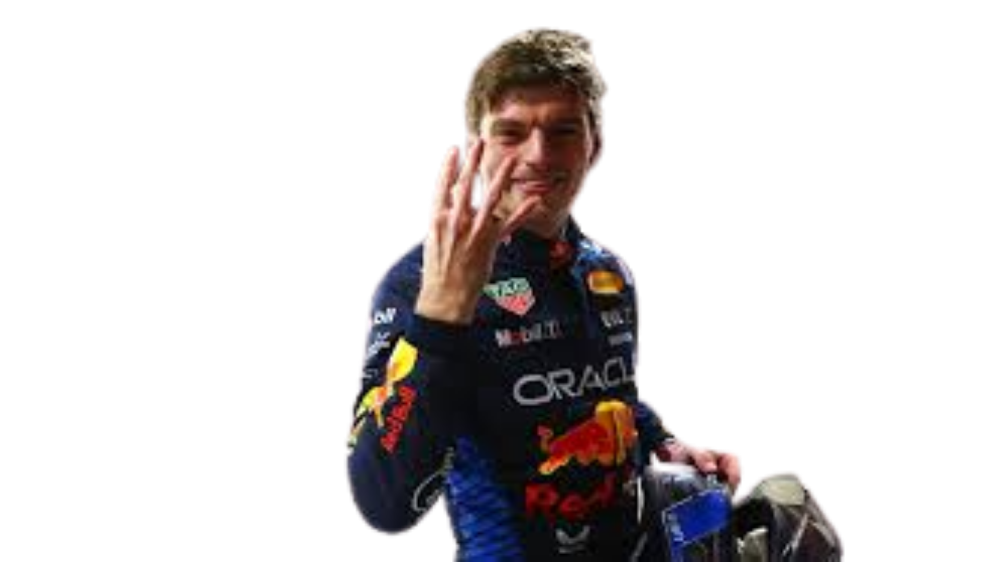

Sobre nós

Abububle da silva, mais conhecido como Arthur yokypipoca, é um empresario no ramo de venda ilegal de patinhos de borracha.
Em 2025 faturou o pib da china após vender todos os seus filhos para o afeganistão pela bagatela de 8.448.756.508.873.181 de bolivares venezuelanos.
Ele é mencionada 2567676969 vezes nos arquivos do epstem, sendo um dos melhores amigos de epstem.
Abububle da silva foi preso em janeiro de 2018 após ter invadido uma diddy part, depois de perder 10 partidas de fortnite e ter bebido 10 litros de velho barreiro.
Nosso estabelecimento!
Veja onde você pode nos encontar!
Nossos produtos!
- Kamavinga
- McQuenn (quebrado)
- Papelão